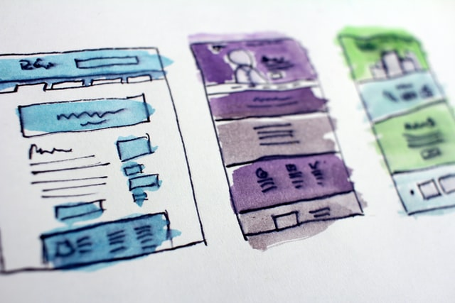

1. Consistencia
Los mismos elementos deben comportarse igual en toda la interfaz.
Ejemplo UI: todos los botones primarios comparten color, radio y padding.
Fundamentos del
El diseño de interfaz de usuario es responsable de la apariencia, la interactividad, la usabilidad, el comportamiento y la sensación general de un producto. El diseño de UI puede determinar si un usuario tiene una experiencia positiva con un producto, por lo que es esencial que las empresas y los creadores se familiaricen con las mejores prácticas de diseño UI.

Publicados en 1986 por Ben Shneiderman, estos principios son usados de referencia para la construcciones de interfaces de claras para el usuario.
Los mismos elementos deben comportarse igual en toda la interfaz.
Ejemplo UI: todos los botones primarios comparten color, radio y padding.
Ofrecer aceleradores (atajos de teclado, acciones rápidas) sin estorbar a los novatos.
Ejemplo UI: Ctrl + S para guardar, además del botón.
Toda acción debe tener una respuesta visible e inmediata.
Ejemplo UI: un spinner al guardar, un check verde al completar.
Dividir procesos largos en pasos claros con inicio y fin.
Ejemplo UI: un checkout en 3 pasos con indicador de progreso.
Mejor evitar el error que mostrar un mensaje después.
Ejemplo UI: deshabilitar el botón "Enviar" hasta que el formulario sea válido.
Permitir deshacer o confirmar antes de ejecutar acciones destructivas.
Ejemplo UI: "¿Seguro que quieres eliminar?" o un botón "Deshacer" tras borrar.
El usuario decide cuándo y cómo avanza; el sistema no le fuerza.
Ejemplo UI: permitir cerrar una ventana modal con la tecla Esc, haciendo clic fuera de ella o con el botón "X".
No hacer que el usuario recuerde información entre pantallas.
Ejemplo UI: mantener visible el resumen del pedido durante todo el checkout.
Los elementos que construyen la capa visual de una interfaz y que deben mantenerse consistentes en todo el producto.
La tipografía debe ser facil de comprender antes que verse bonita, usando tamaños, pesos y espacios consistentes en toda la interfaz y respetando criterios de accesibilidad.
El color debe usarse con un significado claro y constante (por ejemplo, siempre el mismo para errores o acciones), también a la hora de seleccionar una paleta de colores considera que sea accesible.
No es espacio vacío, sino un elemento activo que agrupa, separa y da respiración a la interfaz. Un uso adecuado del espacio en blanco mejora la comprensión y reduce la sensación de saturación .
Los iconos bien diseñados funcionan como señales visuales rápidas que reducen la necesidad de leer texto. Las imágenes, por su parte, pueden aportar contexto emocional o funcional.